질문이 넘치는 교수·학습 과정안,
이렇게 만들어요
칸을 차례대로 채우기만 하면 학교 지도안 양식(A4 세로)이 자동으로 완성되고, DOCX 파일로 내려받아 한글·워드에서 바로 고칠 수 있어요.
시작하기 전에
- 회원 가입·설치가 필요 없어요. 인터넷 창(크롬·엣지 등)에서 바로 열립니다.
- 입력한 내용은 자동 저장돼요. 단, 지금 쓰는 컴퓨터의 이 브라우저에만 저장되니, 다른 컴퓨터에서 이어 쓰려면 💾 JSON 저장으로 파일을 받아 두세요.
- 순서는 백워드 설계를 따라요. 학생이 도달할 모습(평가)을 먼저 정하고, 그다음 도구·목표를 정한 뒤, 마지막에 활동을 설계합니다.
홈 화면
처음 열면 보이는 화면이에요. 세 가지 방법 중 하나로 시작합니다.
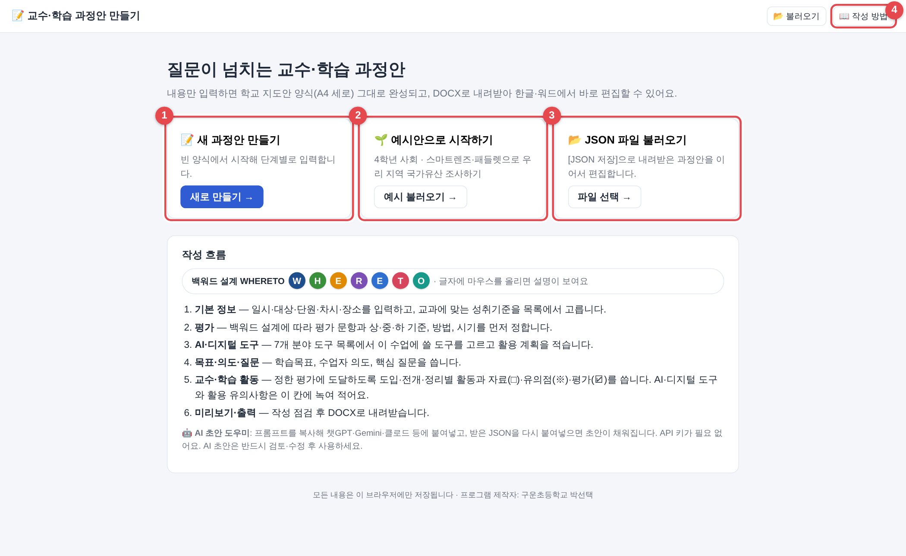
- 새 과정안 만들기 — 빈 양식에서 시작해요. 기본 틀(도입·전개·정리)이 미리 들어 있어요.
- 예시안으로 시작하기 — 4학년 사회 「우리 지역 국가유산 조사하기」 예시가 채워진 상태로 열려요. 처음이라면 예시를 열어 칸마다 무엇을 쓰는지 살펴본 뒤 고쳐 쓰는 방법을 추천해요.
- JSON 파일 불러오기 — 전에 💾 JSON 저장으로 받아 둔 파일을 열어 이어서 작성해요.
- 📖 작성 방법 — 지금 보고 계신 이 안내서를 새 창으로 열어요. 작성 중에도 언제든 누를 수 있어요.
작성 화면 둘러보기
시작하면 아래와 같은 화면이 나와요. 왼쪽에 입력하면 오른쪽 양식이 바로 바뀝니다.
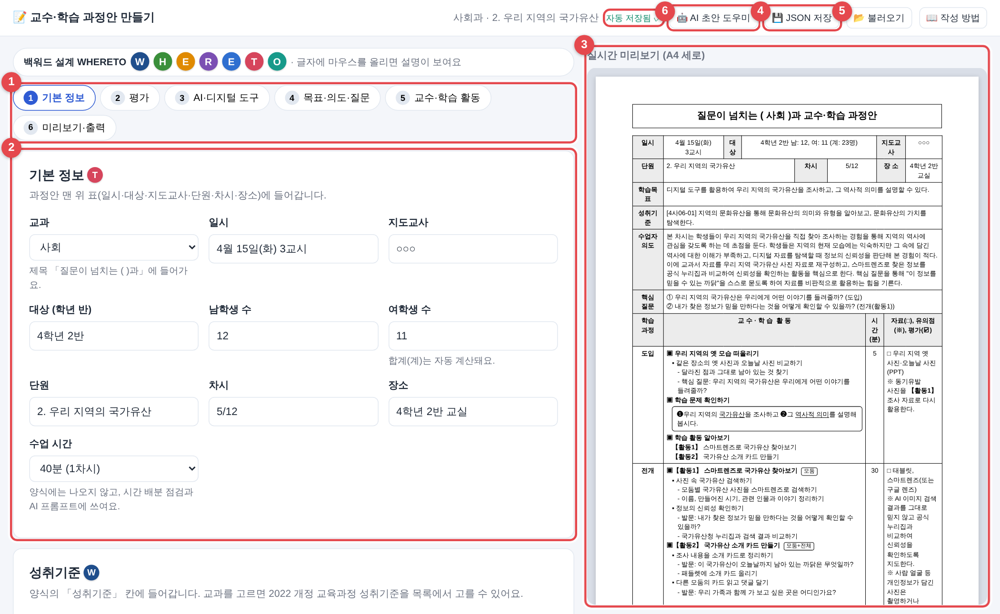
- 단계 표시줄 — 지금 어느 단계인지 보여 줘요. 원하는 단계 이름을 눌러 바로 이동할 수 있고, 지나온 단계에는 ✓ 표시가 붙어요.
- 입력 영역 — 단계별 입력 칸이에요. 회색 예시 글자(안내 문구)를 참고해서 쓰세요. 맨 아래 다음 → 버튼으로 다음 단계로 넘어가요.
- 실시간 미리보기 — 실제 출력될 A4 세로 양식이에요. 입력하는 즉시 반영돼요. (화면이 좁은 노트북·태블릿에서는 6단계에서만 보여요.)
- 🤖 AI 초안 도우미 — 챗GPT·제미나이·클로드 등에 붙여 넣을 프롬프트를 만들어 줘요. 자세한 방법 보기
- 💾 JSON 저장 — 작성 내용을 파일로 내려받아요. 다른 컴퓨터에서 이어 쓰거나 백업할 때 사용해요.
- 자동 저장됨 ✓ — 입력할 때마다 자동으로 저장되고 있다는 표시예요.
백워드 설계 WHERETO
학생이 주도적으로 배우고 깊이 이해하도록 돕는 7가지 수업 설계 원리예요. 앱 곳곳의 색깔 글자가 그 자리에 어떤 원리가 녹아 있는지 알려 줘요.
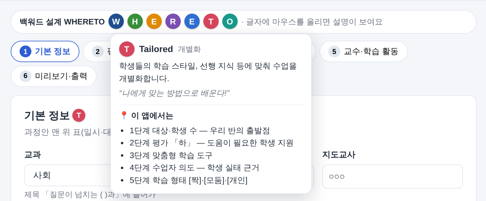
- 작성 화면 맨 위 「백워드 설계 WHERETO」 띠의 글자 → 그 원리의 뜻과, 이 앱에서 어디에 쓰이는지 전체 목록
- 각 단계 제목 옆 글자 → 「📍 여기서는」: 바로 그 칸에서 원리가 어떻게 드러나는지
| 원리 | 뜻 | 이 앱에서는 |
|---|---|---|
| WWhere/Why | 학습 목표와 이유를 명확히 | 1단계 성취기준 · 2단계 평가를 먼저 정하기 · 4단계 학습목표 · 5단계 학습 문제 |
| HHook/Hold | 흥미 유발과 주의 집중 | 4단계 핵심 질문 · 5단계 도입 동기유발 · 핵심 발문 |
| EExplore/Experience | 직접 탐구하고 경험 | 3단계 AI·디지털 도구 · 5단계 전개 【활동1】【활동2】 |
| RReflect/Revise | 피드백으로 다시 생각하고 고치기 | 3단계 AI 피드백 도구 · 5단계 전개 발문·동료 피드백 · 정리 |
| EEvaluate | 스스로 이해도 평가 | 2단계 상·중·하 기준 · 5단계 ☑ 평가 · 정리 「알게 된 점」 |
| TTailored | 학생에 맞춘 개별화 | 1단계 대상·학생 수 · 2단계 「하」 지원 · 3단계 맞춤형 도구 · 4단계 수업자 의도 · 5단계 학습 형태 |
| OOrganized | 학습 경험의 구조화 | 평가 → 도구 → 목표 → 활동 순서 · 5단계 도입-전개-정리와 시간 배분 · 6단계 작성 점검 |
1기본 정보
과정안 맨 위 표(일시·대상·지도교사·단원·차시·장소)와 「성취기준」 칸에 들어가는 내용이에요.
① 기본 정보
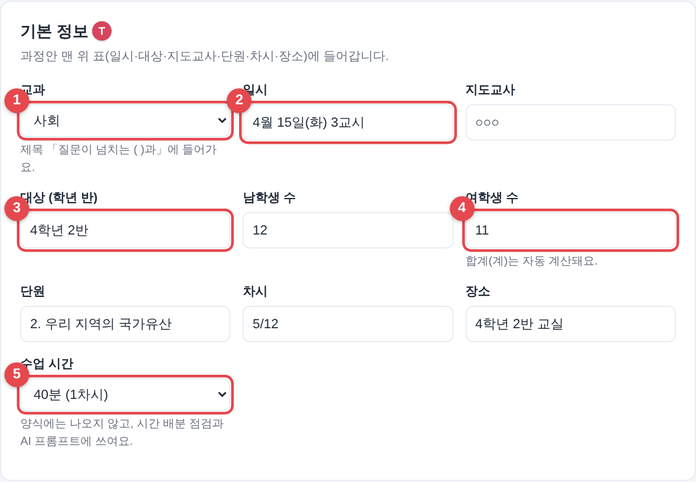
- 교과 — 목록에서 고르면 제목 「질문이 넘치는 ( 사회 )과 교수·학습 과정안」에 자동으로 들어가요.
- 일시 — 「4월 15일(화) 3교시」처럼 자유롭게 써요.
- 대상(학년 반) — 「4학년 2반」처럼 써요.
- 남·여학생 수 — 숫자만 넣으면 양식에 「남: 12, 여: 11 (계: 23명)」처럼 합계가 자동 계산돼요.
- 수업 시간 — 40분(1차시) 또는 80분(2차시 블록)을 골라요. 양식에는 나오지 않지만 5단계 시간 합계 점검과 AI 프롬프트에 쓰여요.
② 성취기준 고르기
교과를 고르면 바로 아래에 2022 개정 교육과정 성취기준 목록이 나타나요. 고르기만 하면 코드와 문장이 그대로 들어가요.
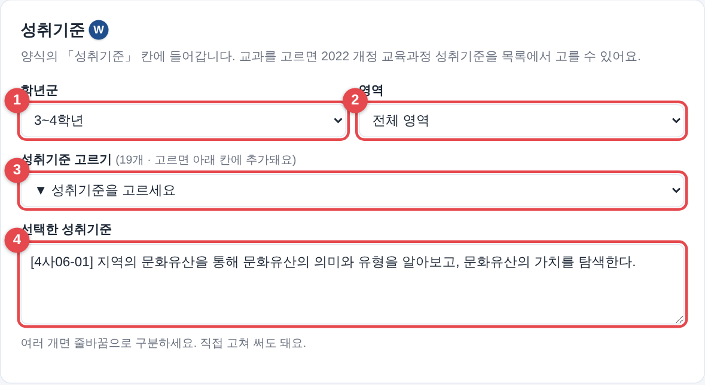
- 학년군 — 「대상」 칸의 학년(예: 4학년 → 3~4학년)에 맞춰 자동으로 골라져요. 다른 학년군도 바꿔 볼 수 있어요.
- 영역 — 목록이 길면 영역(예: 과학의 「물질」, 국어의 「문학」)으로 좁혀 보세요. 「전체 영역」이면 영역별로 묶여 나와요.
- 성취기준 고르기 — 누르면 성취기준 목록이 펼쳐져요. 하나를 고르면 아래 칸에 바로 추가되고, 이미 추가한 성취기준 앞에는 ✓가 붙어요. 여러 개를 차례로 고를 수 있어요.
- 선택한 성취기준 — 양식에 들어갈 내용이에요. 직접 고쳐 쓰거나 지울 수 있어요.
2평가
과정안 맨 아래 평가 표에 들어가요. 백워드 설계에 따라 활동보다 평가를 먼저 정합니다.
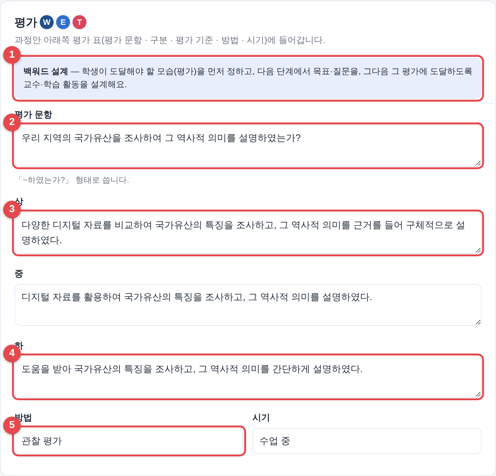
- 백워드 설계 안내 — "학생이 수업이 끝났을 때 무엇을 할 수 있어야 하는가?"를 먼저 떠올려 보세요.
- 평가 문항 — 「~하였는가?」 형태로 써요. 예: 우리 지역의 국가유산을 조사하여 그 역사적 의미를 설명하였는가?
- 상 — 가장 높은 수행 수준을 「~하였다.」로 써요. "다양한 자료를 비교하여 … 구체적으로 설명하였다."
- 하 — "도움을 받아 … 간단하게 설명하였다."처럼 도움이 필요한 수준을 써요. (중은 그 사이)
- 방법·시기 — 칸을 누르면 「관찰 평가」, 「수업 중」 같은 추천 목록이 나와요. 직접 써도 돼요.
3AI·디지털 도구
이 수업에서 쓸 AI·디지털 도구를 고르고, 어떻게 쓸지 적어요. 양식에 따로 칸은 없고, 5단계 자료(□) 칸과 AI 프롬프트에 반영돼요.
도구 고르기
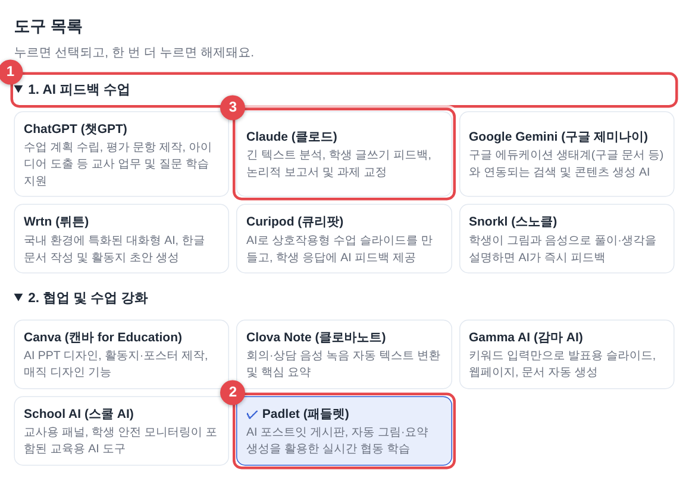
- 분야 제목 — AI 피드백 수업, 협업 및 수업 강화, 수업 상호작용 & 퀴즈, 교과 특화 맞춤형 학습, 멀티미디어 & 생성형 창작, 메타버스, 평가 & 데이터 진단의 7개 분야로 나뉘어 있어요. 제목을 누르면 접고 펼 수 있어요.
- 선택된 도구 — 파란 배경과 ✓ 표시가 붙어요. 한 번 더 누르면 선택이 해제돼요.
- 도구 카드 — 도구 이름 아래에 간단한 설명이 있어요. 누르면 선택돼요.
활용 계획 쓰기
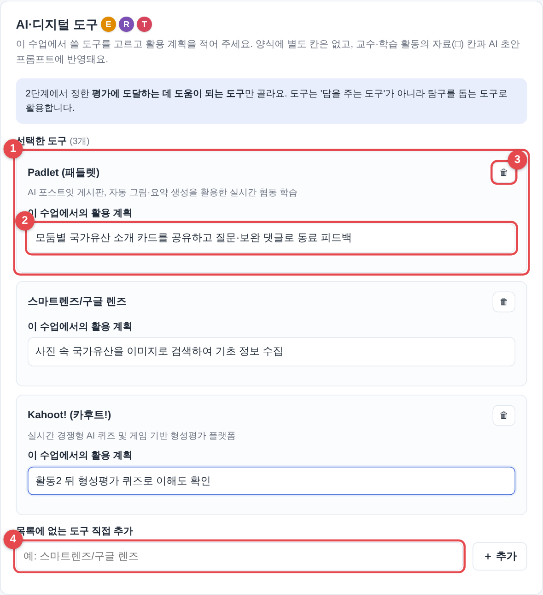
- 선택한 도구 — 고른 도구가 위쪽에 차례로 모여요.
- 이 수업에서의 활용 계획 — 도구를 언제, 무엇을 위해 쓰는지 한 줄로 적어요. 예: 「모둠별 소개 카드를 공유하고 질문·보완 댓글로 동료 피드백」
- 🗑 삭제 — 선택을 취소해요.
- 직접 추가 — 목록에 없는 도구(예: 스마트렌즈, 전자칠판)는 이름을 쓰고 ＋ 추가를 눌러요.
4목표·의도·질문
양식 위쪽의 「학습목표」, 「수업자 의도」, 「핵심 질문」 칸이에요. (성취기준은 1단계에서 골라요.)
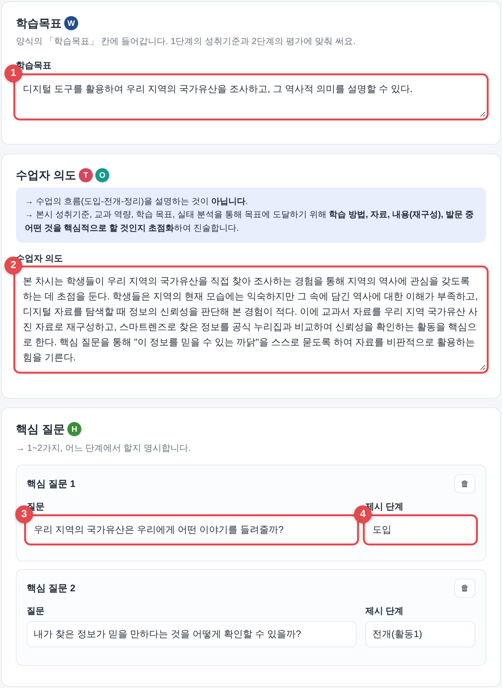
- 학습목표 — 「~할 수 있다.」로 끝나는 1~2문장. 1단계 성취기준, 2단계 평가 문항과 내용이 맞아야 해요.
- 수업자 의도 — 수업 흐름(도입-전개-정리)을 설명하는 칸이 아니에요. 성취기준·교과 역량·학생 실태를 근거로 학습 방법, 자료, 내용 재구성, 발문 중 무엇에 초점을 두었는지 써요.
- 핵심 질문 — 수업 전체를 이끄는 질문. 1~2개까지 쓸 수 있어요.
- 제시 단계 — 그 질문을 어느 단계에서 던질지 적어요. 칸을 누르면 「도입」, 「전개(활동1)」 같은 추천이 나와요.
5교수·학습 활동
양식의 가장 큰 부분이에요. 학습 문제를 쓰고, 도입·전개·정리별로 활동과 자료·유의점·평가를 적어요.
① 학습 문제
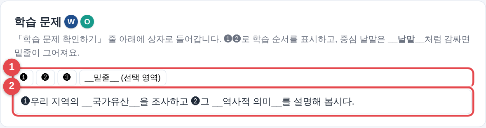
- ❶❷❸ · 밑줄 버튼 — 번호 버튼은 커서 위치에 번호를 넣어요. 낱말을 드래그해 선택한 뒤 __밑줄__을 누르면 그 낱말에 밑줄이 그어져요.
- 학습 문제 칸 — 예: 「❶우리 지역의 __국가유산__을 조사하고 ❷그 __역사적 의미__를 설명해 봅시다.」 → 양식에서는 도입의 「▣ 학습 문제 확인하기」 줄 바로 아래에 상자로 들어가요.
② 활동 행 쓰기
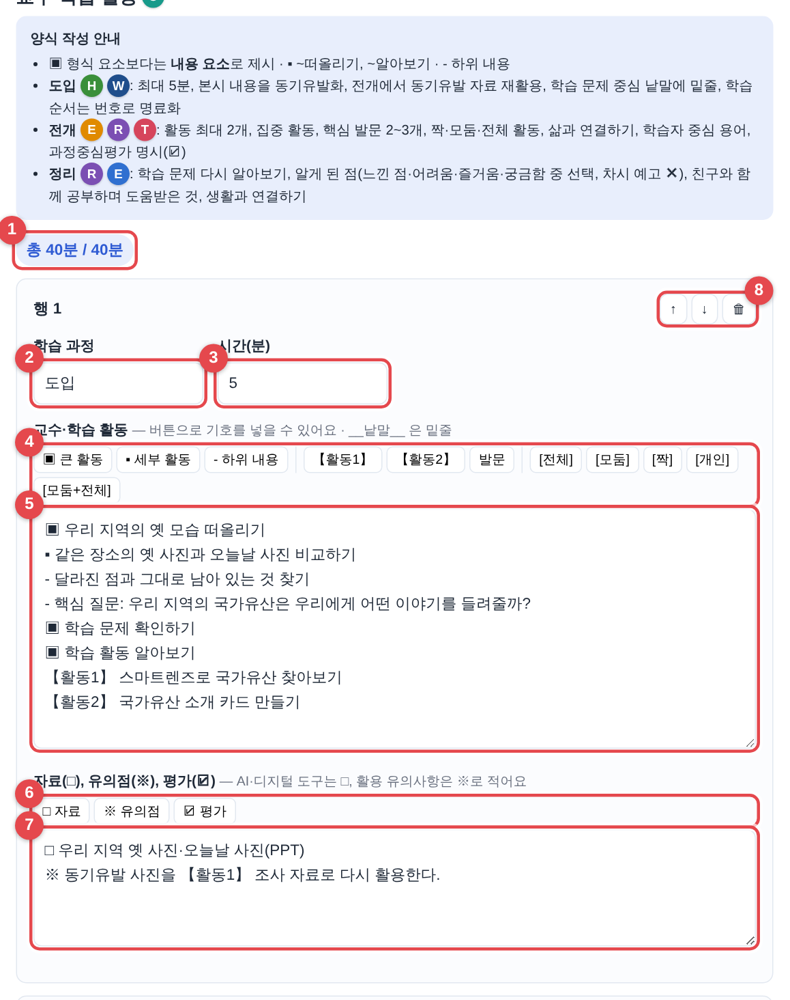
- 시간 합계 — 모든 행의 시간을 더해 보여 줘요. 1단계에서 고른 수업 시간(40분/80분)과 다르면 빨간색으로 바뀌어요.
- 학습 과정 — 도입·전개·정리 중에 써요(칸을 누르면 목록이 나와요).
- 시간(분) — 숫자만 써요. 도입은 최대 5분이 권장돼요.
- 활동 기호 버튼 — 누르면 커서 위치에 기호가 들어가요. 아래 「입력 기호 한눈에 보기」 표를 참고하세요.
- 교수·학습 활동 칸 — 한 줄에 하나씩, 맨 앞 기호에 따라 양식에서 자동으로 들여쓰기·굵게 처리돼요.
- 자료·유의점·평가 버튼 — □ 자료, ※ 유의점, ☑ 평가 기호를 넣어요.
- 자료(□)·유의점(※)·평가(☑) 칸 — 양식 오른쪽 칸에 들어가요. AI·디지털 도구는 □, AI 활용 유의사항은 ※, 과정중심평가는 ☑로 적어요.
- ↑ ↓ 🗑 — 행 순서를 바꾸거나 지워요. 맨 아래 ＋ 행 추가로 행을 늘릴 수 있어요(예: 전개를 활동1·활동2 두 행으로 나누기).
입력 기호 한눈에 보기
| 입력 | 뜻 | 양식에서는 |
|---|---|---|
▣ | 큰 활동 (형식 요소보다 내용 요소로) | 굵게, 들여쓰기 없음 |
▪ | 세부 활동 (~떠올리기, ~알아보기) | 한 칸 들여쓰기 |
- | 하위 내용, 발문 | 두 칸 들여쓰기 |
【활동1】 | 전개 활동 번호 (최대 2개) | 굵게 |
- 발문: | 핵심 발문 (전개에 2~3개) | 그대로 표시, 개수 점검 |
[모둠] [전체] [짝] [개인] [모둠+전체] | 학습 형태 | 테두리 상자로 표시 |
__낱말__ | 중심 낱말 | 밑줄 |
□ ※ ☑ | 자료 · 유의점 · 평가 | 오른쪽 칸에 그대로 |
- 도입: 최대 5분, 본시 내용으로 동기유발, 동기유발 자료를 전개에서 다시 활용, 학습 문제 중심 낱말에 밑줄, 학습 순서는 번호로
- 전개: 활동 최대 2개, 핵심 발문 2~3개, 짝·모둠·전체 활동, 삶과 연결하기, 학습자 중심 용어, 과정중심평가(☑) 명시
- 정리: 학습 문제 다시 알아보기, 알게 된 점(느낀 점·어려움·즐거움·궁금함 중 선택), 친구와 함께 공부하며 도움받은 것, 생활과 연결하기 — 차시 예고는 쓰지 않아요
③ 자주 쓰는 문구 · 선택한 도구
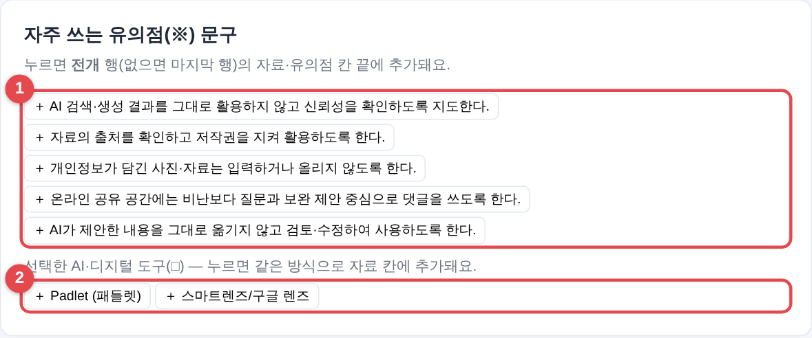
- 자주 쓰는 유의점(※) — AI 결과의 신뢰성 확인, 저작권·출처, 개인정보, 디지털 시민성 등 자주 쓰는 문구를 한 번에 넣어요. 전개 행의 자료·유의점 칸 끝에 추가돼요.
- 선택한 AI·디지털 도구(□) — 3단계에서 고른 도구가 버튼으로 나와요. 누르면 「□ 도구 이름」이 전개 행에 추가돼요.
6미리보기·출력
작성 점검을 확인하고 파일로 내려받아요.
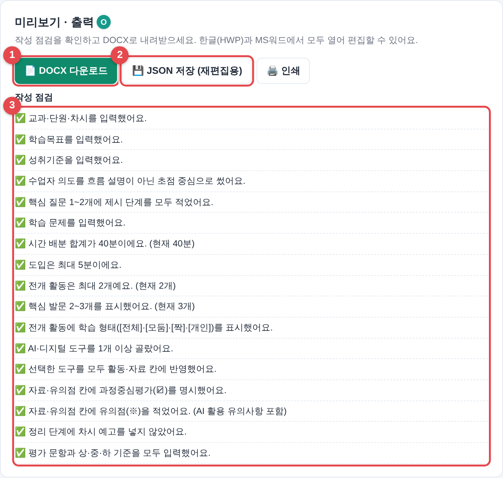
- 📄 DOCX 다운로드 — 완성된 과정안을 워드 파일(.docx)로 받아요. 한글(HWP)과 MS워드 모두에서 열어 고칠 수 있어요.
- 💾 JSON 저장 — 나중에 이 프로그램에서 다시 열어 고칠 수 있는 파일이에요. DOCX와 함께 받아 두면 좋아요.
- 작성 점검 — 양식 규칙을 자동으로 확인해요. ✅는 잘 된 항목, ⚠️는 다시 살펴볼 항목이에요. ⚠️가 있어도 다운로드는 할 수 있어요.
- 교과·단원·차시, 학습목표, 성취기준, 학습 문제를 입력했는가
- 수업자 의도가 흐름 설명이 아닌가 · 핵심 질문이 1~2개이고 제시 단계를 적었는가
- 시간 합계가 맞는가 · 도입 5분 이내 · 전개 활동 2개 이내 · 발문 2~3개 · 학습 형태 표시
- ☑ 평가와 ※ 유의점을 적었는가 · 정리에 차시 예고가 없는가
- AI·디지털 도구를 골랐고, 고른 도구가 활동·자료 칸에 모두 나오는가
- 평가 문항과 상·중·하 기준을 모두 썼는가
오른쪽 미리보기
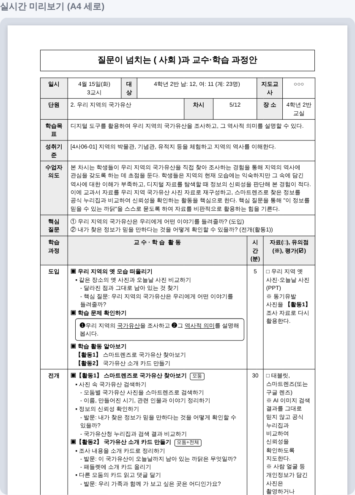
🤖 AI 초안 도우미
챗GPT·제미나이·클로드 같은 AI에게 과정안 초안을 받아 한 번에 채우는 기능이에요. API 키나 결제 없이 평소 쓰는 AI 채팅 화면만 있으면 돼요.
- 앞 단계를 먼저 채우세요. 교과·단원·성취기준·평가·도구를 입력해 둘수록 내 수업에 맞는 초안이 나와요. 1단계에서 고른 성취기준은 AI가 바꾸지 않고 그대로 써요.
- 화면 위쪽 🤖 AI 초안 도우미를 누르고 📋 프롬프트 복사하기를 눌러요.
- AI 채팅 창에 붙여넣기(Ctrl+V) 하고 보내요.
- AI의 답을 전부 복사해서 ② AI 응답 붙여넣기 탭에 붙여넣고 ✨ 초안 적용하기를 눌러요.
- 1단계부터 차례로 보며 우리 반에 맞게 꼭 고쳐요.
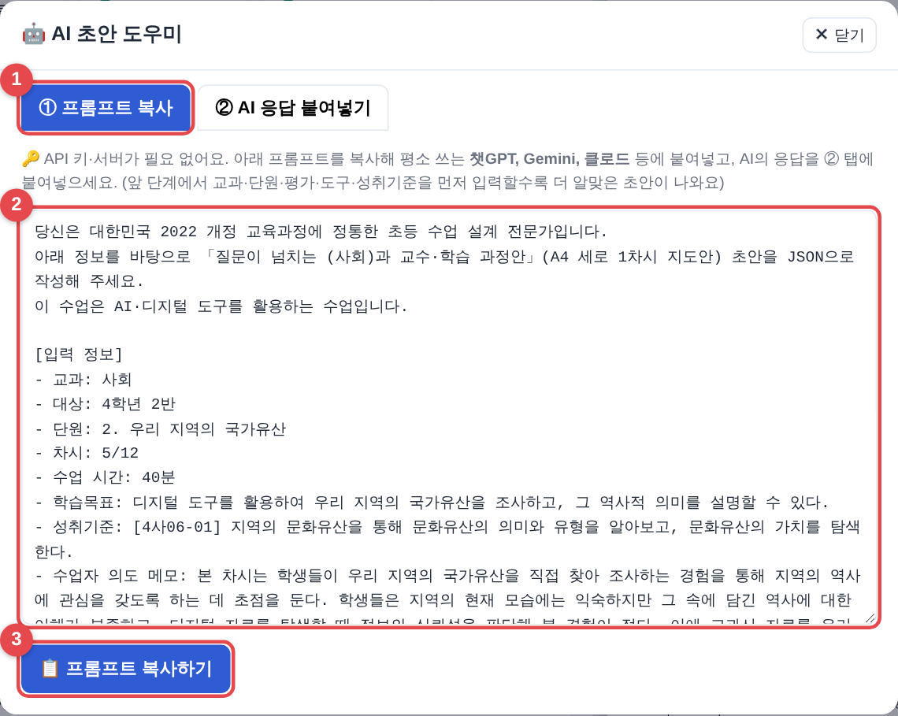
- ① 프롬프트 복사 탭
- 프롬프트 — 지금까지 입력한 내용과 양식 작성 원칙(백워드 설계, 도입 5분, 발문 2~3개 등)이 자동으로 들어 있어요. 고칠 필요는 없어요.
- 📋 프롬프트 복사하기 — 누르면 복사돼요. AI 채팅 창에 붙여넣으세요.
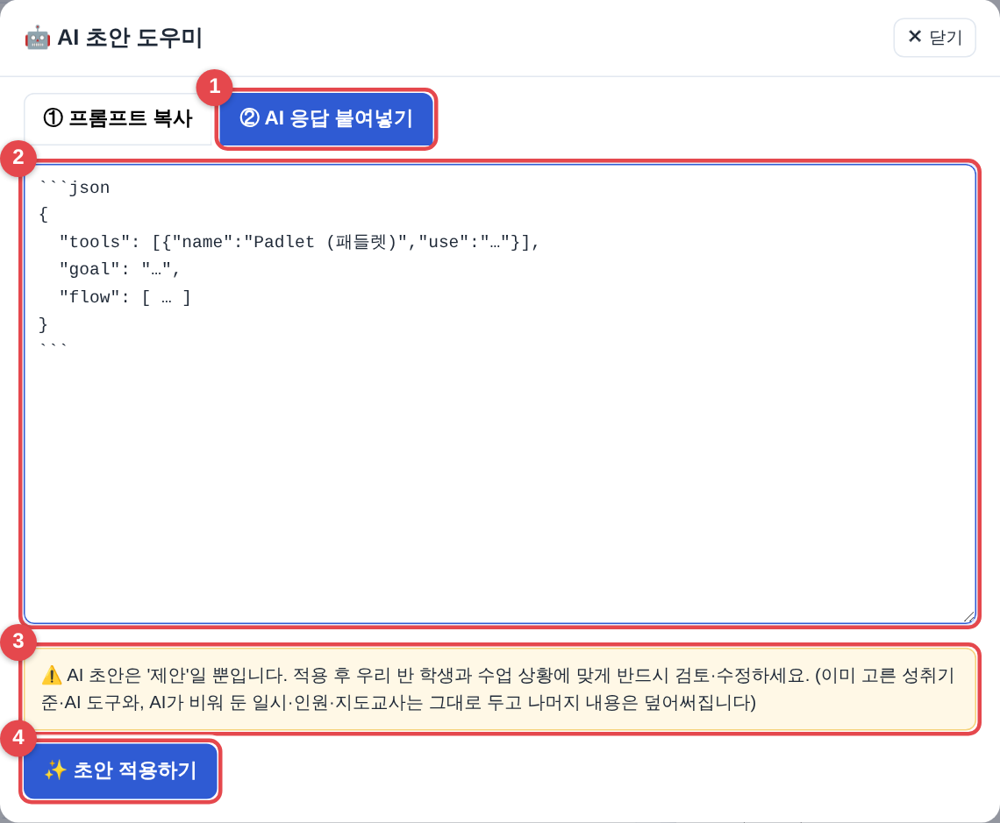
- ② AI 응답 붙여넣기 탭
- 붙여넣기 칸 — AI 답을 앞뒤 설명까지 통째로 붙여넣어도 돼요. 중괄호
{ … }부분을 알아서 찾아요. - 주의 안내 — 적용하면 기존 입력이 덮어써져요. 단, 1단계에서 고른 성취기준, 3단계에서 고른 도구, 그리고 일시·학생 수·지도교사처럼 AI가 비워 둔 칸은 그대로 남아요.
- ✨ 초안 적용하기 — 누르면 확인 창이 뜨고, 확인하면 모든 칸이 채워져요.
완성된 과정안
📄 DOCX 다운로드로 받은 파일을 열면 이렇게 나와요. (예시안 기준)
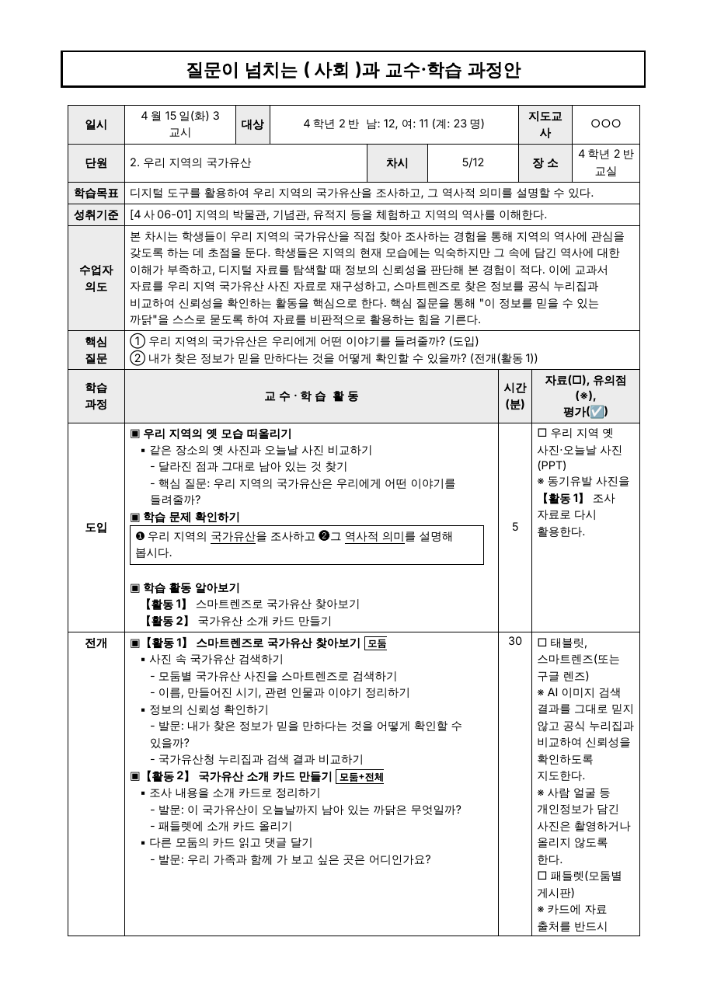
자주 묻는 질문
작성하던 내용이 사라졌어요.
내용은 같은 컴퓨터의 같은 브라우저에만 저장돼요. 다른 브라우저(크롬↔엣지)로 열었거나, 시크릿 창이었거나, 인터넷 사용 기록을 지웠다면 보이지 않아요. 중요한 과정안은 💾 JSON 저장으로 파일을 꼭 받아 두세요.
다른 컴퓨터(학교 ↔ 집)에서 이어서 쓰고 싶어요.
쓰던 컴퓨터에서 💾 JSON 저장 → 파일을 메일·USB 등으로 옮김 → 다른 컴퓨터에서 📂 불러오기로 그 파일을 열면 돼요.
"JSON을 찾지 못했어요" / "JSON 해석에 실패했어요"라고 나와요.
AI 답이 중간에 끊겼을 가능성이 커요. AI에게 "계속" 또는 "JSON만 다시 전체 출력해 줘"라고 요청한 뒤, 처음 {부터 마지막 }까지 모두 복사해 붙여넣으세요.
시간 합계가 빨간색이에요.
각 행의 시간(분)을 더한 값이 1단계에서 고른 수업 시간(40분/80분)과 달라요. 행별 시간을 조정하거나 1단계에서 수업 시간을 바꾸세요.
전개를 활동1, 활동2 두 칸으로 나누고 싶어요.
5단계 맨 아래 ＋ 행 추가를 누르고, 학습 과정에 「전개」를 쓴 뒤 ↑ 버튼으로 정리 위로 올리세요. 각 행에 시간을 따로 적을 수 있어요.
양식의 칸 너비나 글꼴을 바꾸고 싶어요.
DOCX 파일을 한글이나 워드에서 열어 자유롭게 고치면 돼요. 이 프로그램은 내용 작성과 기본 양식 배치를 도와주는 역할이에요.
프로그램 제작자: 구운초등학교 박선택 · 과정안 만들러 가기 →